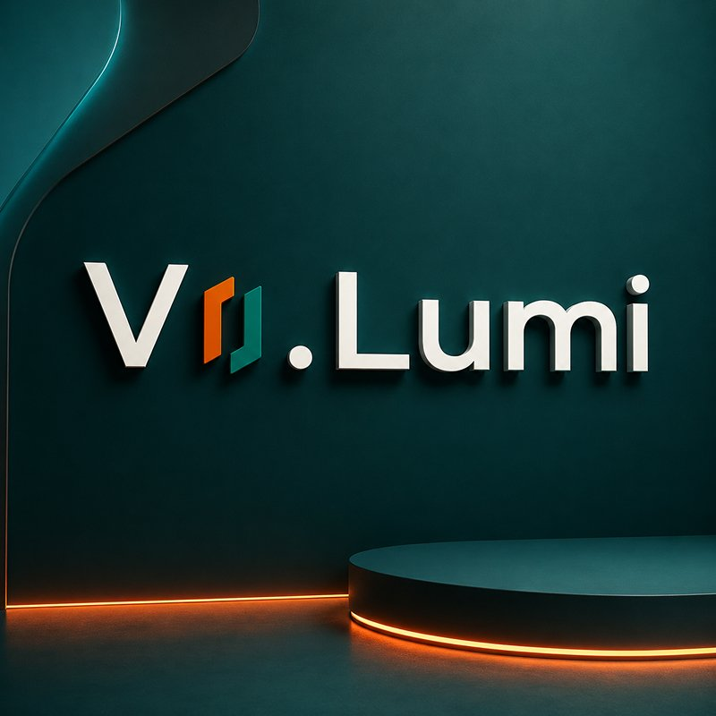
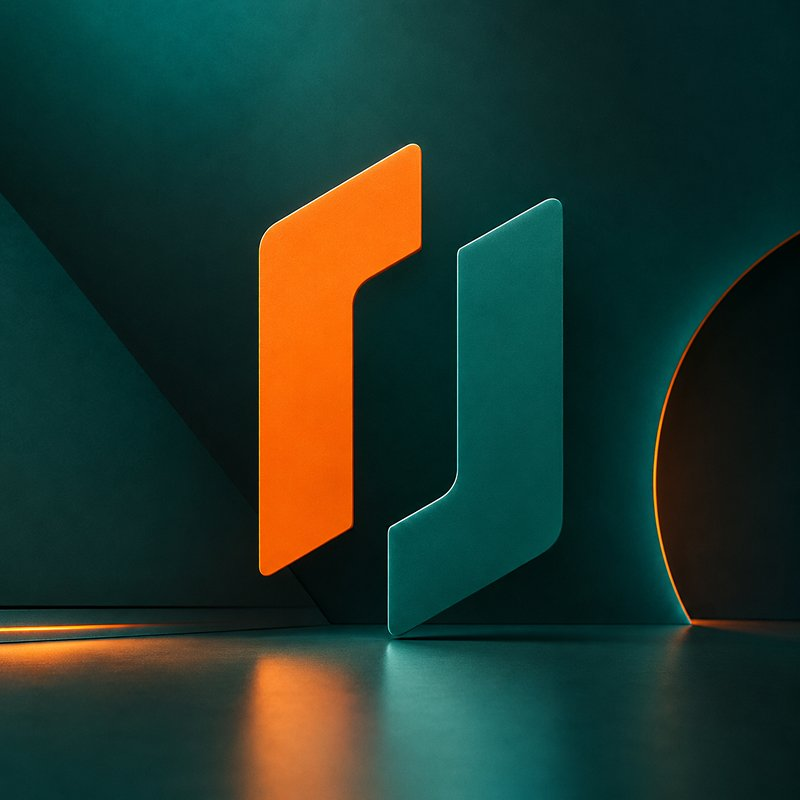
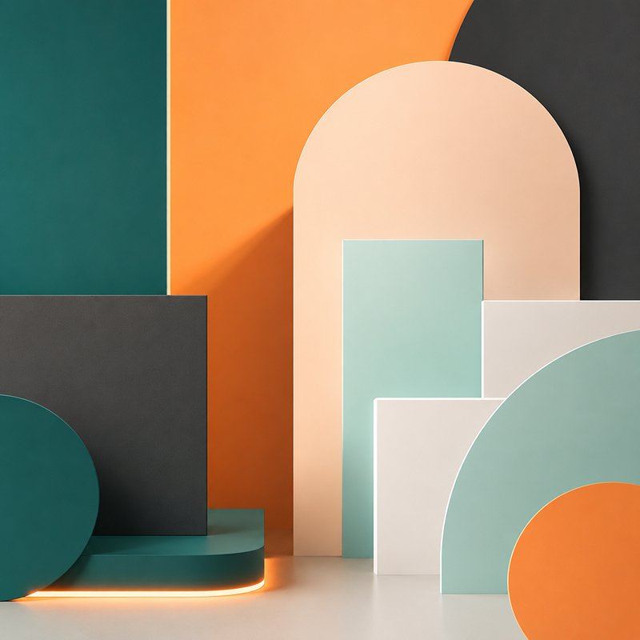

Vo.Lumi
Logo design e brand identity

Un'identità nata prima del resto.
Vo.Lumi è una piccola azienda fondata da due ragazze di Cesena che producono contenuti social usando esclusivamente lo smartphone. La limitazione dello strumento è la loro cifra — velocità e semplicità senza rinunciare alla professionalità.
Essendo una realtà appena nata, il logo è stato il primo elemento narrativo costruito: un'identità modulare pensata per crescere nel tempo.
"Volumi: l'unità di misura dei solidi. E il solido, con la luce giusta, genera un'ombra. La stessa luce che serve per fotografare. La stessa fotografia fatta con uno smartphone — che è, a suo modo, un parallelepipedo."


Il segno nasce dall'estrusione di un rettangolo in vista quasi isometrica — la forma dello smartphone vista in prospettiva. Dal suo wireframe vengono estratti due segni uguali, specchiati e ribaltati, che si incastrano tra pieni e vuoti ricreando quel solido di un determinato Vo.Lume.
Un logo che non illustra il lavoro del brand — lo è concettualmente.
La tipografia sceglie Montserrat per tutto: semplicità e chiarezza al primo posto, nessuna distrazione. Il sistema cromatico lavora sul contrasto teal e arancione — la logica del color grading cinematografico applicata alla comunicazione di brand. I due colori non sono decorativi: arancione per i contenuti, verde petrolio per i clienti. Una grammatica cromatica che organizza il senso prima ancora che l'estetica.


